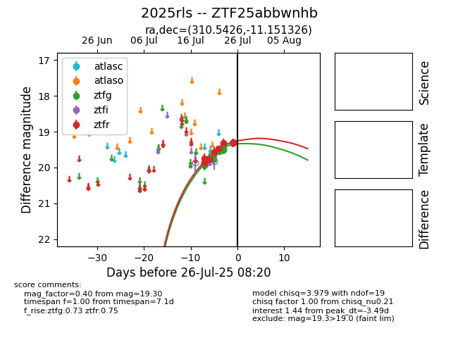

Target 2025rls at 2025-07-26 08:20, see:
FINK: fink-portal.org/2025rls
Lasair: lasair-ztf.lsst.ac.uk/objects/2025rls
ALeRCE: alerce.online/object/2025rls
TNS: wis-tns.org/object/2025rls
YSE: ziggy.ucolick.org/yse/transient_detail/2025rls
alt names
ZTF25abbwnhb (ztf,fink)
2025rls (tns,yse)
coordinates:
equatorial (ra, dec) = (310.5426,-11.15133)
galactic (l, b) = (35.2861,-29.59414)
photometry
last ztfg=19.32, ztfr=19.30
12 ztfg, 9 ztfr detections
